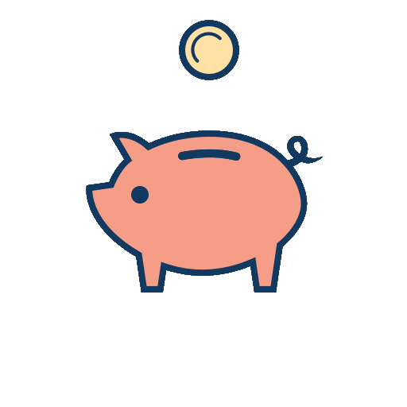
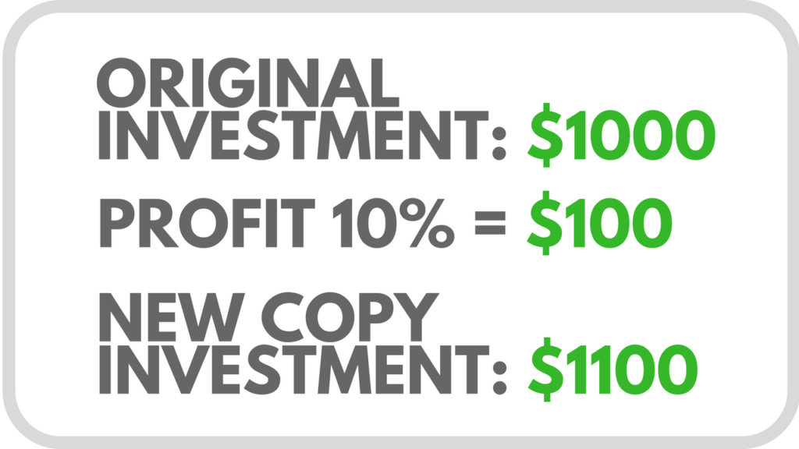
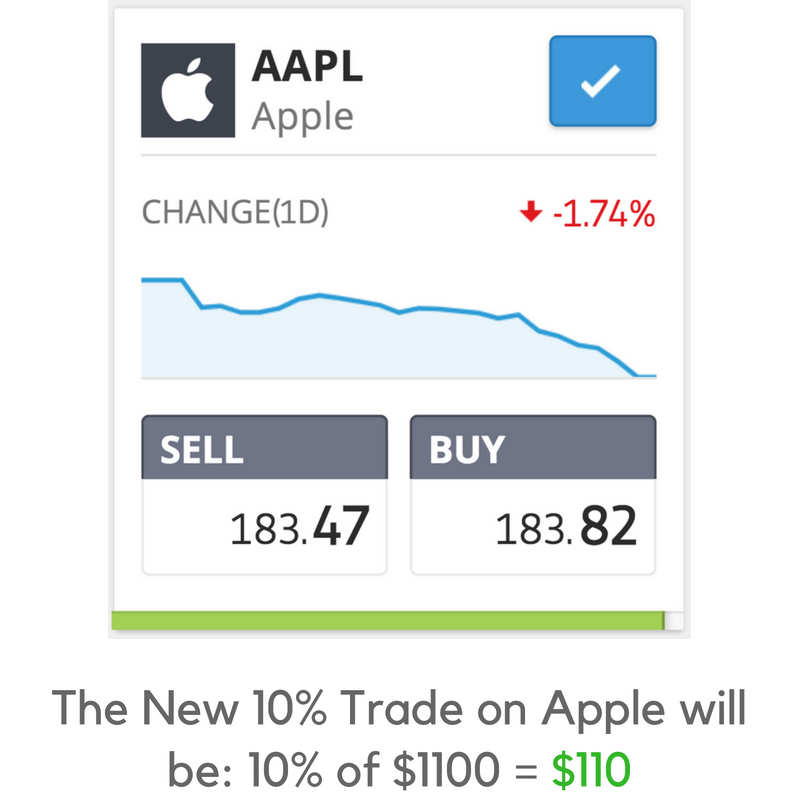
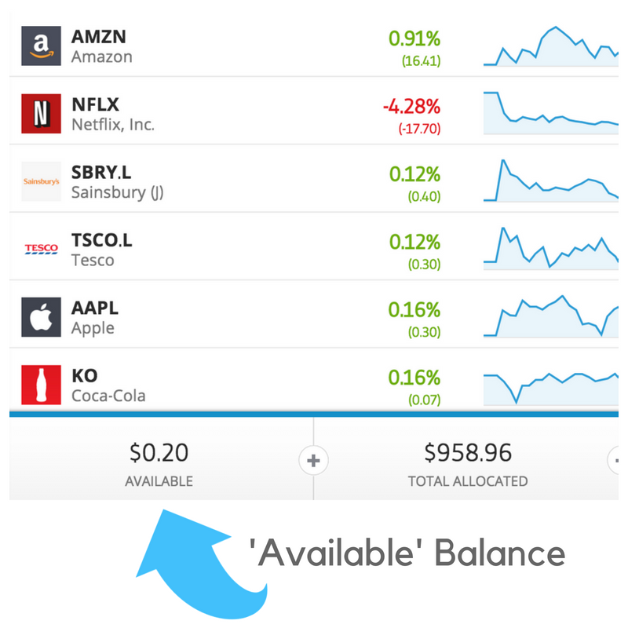
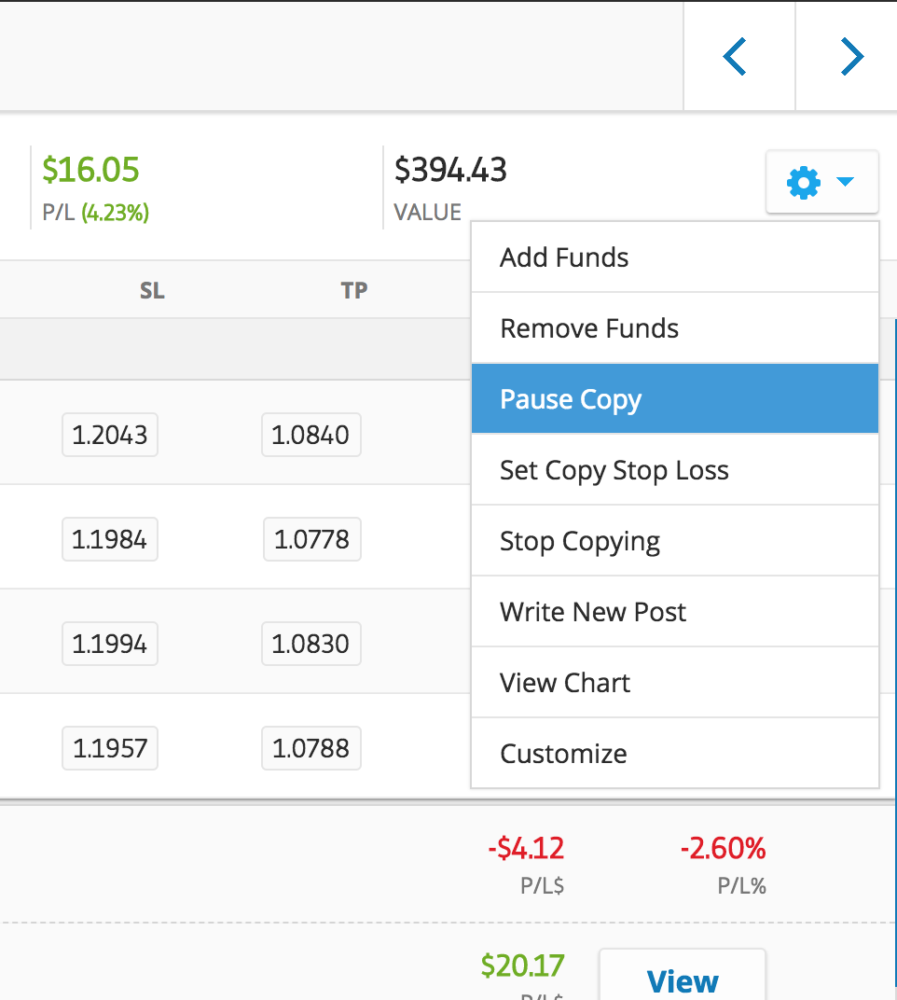
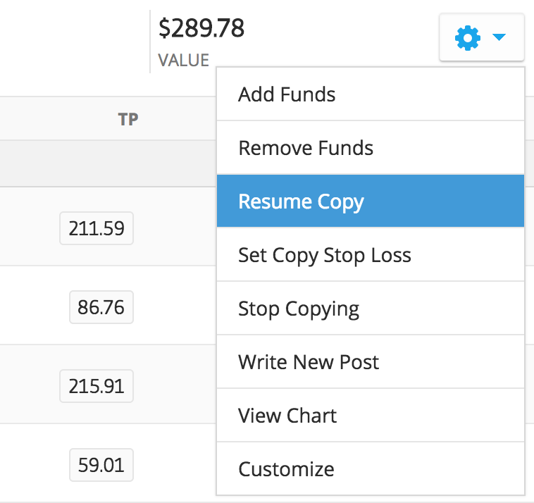
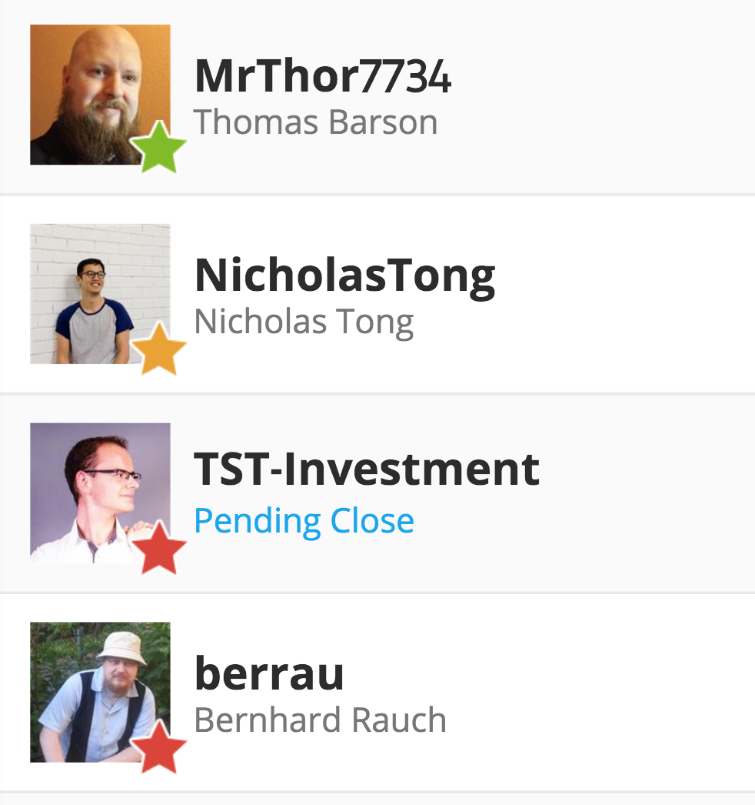

It's why we're all here — to make money. So what happens to your profits when you're copy trading on eToro? Do they get re-used automatically or do you have to put them back in all the time? How much can you lose? This guide covers everything you need to know.
Do Your Profits Get Automatically Re-Invested?
The answer is yes. Copy trading is designed to be as hands-off as possible. It's meant to be a solution for people who want to invest and then be able to walk away for long periods of time — an investment which can take care of itself and just keep growing over time.
So You Can Just Copy Someone and Leave It?
That's precisely the goal. When you copy someone, you're investing in their ability to make trading decisions — when to buy, when to sell, whether to use 'leverage'. It's all left to them. Hopefully they'll make good decisions and make you money. That's why you look at their statistics beforehand and try to pick consistent performers.
So, Let's Say They're Winning...
If you copied someone with $1,000 and they've made 10% profit, you now have your initial $1,000 plus the $100 profit — that's $1,100. Each day, eToro looks at the original amount you invested in someone you're copying, and adds or subtracts any profits or losses they've made for you.
eToro Does the Maths for You
In our example, eToro sees your 10% profit and adds it to your original invested amount. So now, since you've already made 10% profit — an extra $100 — your total amount within that copy position is $1,100. When the system automatically copies the next trade for you, it does so using your full $1,100, meaning even a modest gain now generates a slightly higher return in cash terms. This is how compounding works in copy trading.
Why Does it Automatically Re-Use My Profits?
Once you find the right person to copy, you'll soon realise that letting your winnings keep going into new, bigger positions — automatically being re-invested — is the best way to grow your account over time. Copy trading does this for you automatically. As long as you just leave it, your profits will be re-invested and re-used. It keeps your money working hard.
How to Withdraw Your Profits
So let's say you're happy with your account size, or you just need the money. How do you withdraw your profits from a copy trade? There are three options:
Option 1 — Stop Copying Someone
Your first option is to stop the copy completely. This means you will no longer be copying that person. You can re-copy them at any time in future, but for now it stops. When you choose this option, eToro returns the money from that copy position to your 'Available Balance' — plus or minus any profits or losses made for you during the time you were copying them.
So if you invested $1,000 and they made you $200 profit while you were copying them, then $1,200 will be returned to your available balance. If they lost you $200, then $800 will be returned.
About Your 'Available Balance'
Your 'Available Balance' in your eToro account is any money which you have available to trade with — money you can withdraw back to your bank account at any time. When you credit your account, the money shows up in your available balance. Once you use some of that money in a copy position, it leaves your available balance and goes to work for you. If you want to withdraw it from eToro, you must close the copy position first, then the money returns to your available balance.
Option 2 — Pause the Copy
Another way to access your profits is to "pause" the copy on a particular person. You can use this option if you want to keep copying them, but want to be able to withdraw some money first. When you click "Pause", all of the trades currently open via that person will stay open — they'll close them naturally whenever they close them. But from the time you click 'Pause', none of their new trades will be copied.
Why Would You Want to Do This?
Sometimes you want to withdraw money from eToro, or use some of your money to copy a different person. You can only use the money in your 'Available' funds to do this, so first you have to make sure it's not tied up in active positions. When you 'Pause' a copy, unused funds start to build up within that copy position over time — as old trades are closed and new ones aren't opened.
Remove Funds and Resume Copy
Once you've let the available money build up in the copy position, you can choose "Remove Funds" from the copy trading menu, and it'll move that money back to your 'Available' balance. To resume the copy, just use the same menu and select 'Resume Copy'. It will automatically start copying all of their new trades again.
Option 3 — Remove Funds Directly
Sometimes the person you're copying isn't actually using all of the funds you copied them with in active trades — they may be holding some money back while waiting for a good opportunity. You can remove any money which they're not currently using in active trades. Simply select the menu item for that copy trade and you'll see the 'Remove Funds' option. A pop-up will show how much you can currently move to your 'Available Balance'.
Remember — the amount it lets you remove changes over time, depending on how many active trades are open. Using the 'Pause Copy' feature will cause this amount to rise as old trades close and new ones don't get opened.
'Copy Pending Close' — What Does That Mean?
If you decide to stop copying someone, the system automatically tries to close all the trades you have via that person. These are live trades being carried out on exchanges around the world — some may have been bought on the NASDAQ in New York, others on the London Stock Exchange, or in Paris or Germany. In order to close the trades and cash out your money, the relevant exchange needs to be open.
Exchanges Aren't Open 24/7
Most exchanges work for around 7 hours per day, 5 days per week, and are closed on weekends. So if you choose to stop copying someone on Friday night, some of the positions may be in equities bought on various national exchanges. The system will close those as soon as the relevant exchanges are open — most likely the following Monday. That's what "Copy Pending Close" means — it's closing, just waiting for the right market conditions to do so.